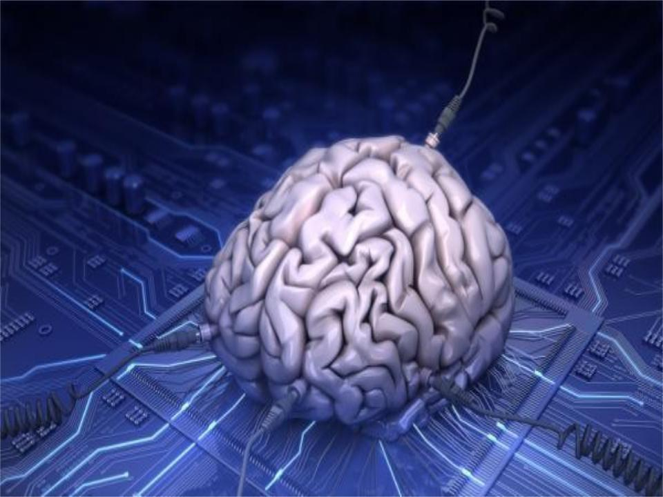
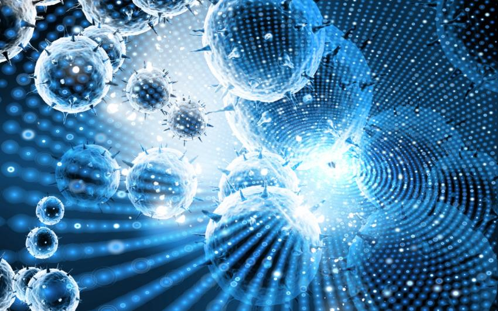

Биокомпьютеры и нанотехнология представляют собой две удивительные области научных исследований, которые объединяют биологию и компьютерные науки, а также физику и химию соответственно. В данном сайте мы рассмотрим основные аспекты этих двух тем и их взаимосвязь.
Биокомпьютеры

Биокомпьютер — компьютер, который функционирует как живой организм или содержит биологические компоненты. Создание биокомпьютеров основывается на направлении молекулярных вычислений. В качестве вычислительных элементов используются белки и нуклеиновые кислоты, реагирующие друг с другом.
В этом разделе мы рассмотрим основные принципы работы биокомпьютеров, их преимущества и потенциальные выходы на практическое применение.
Нанотехнология

Нанотехнология — область фундаментальной и прикладной науки и техники, включающая теоретическое обоснование, практические методы исследования, анализа и синтеза, а также методы производства и применения продуктов с заданной атомной структурой путём контролируемого манипулирования отдельными атомами и молекулами
В данном разделе мы рассмотрим основы нанотехнологии, ее применения в различных областях и потенциальные риски, связанные с ее развитием.